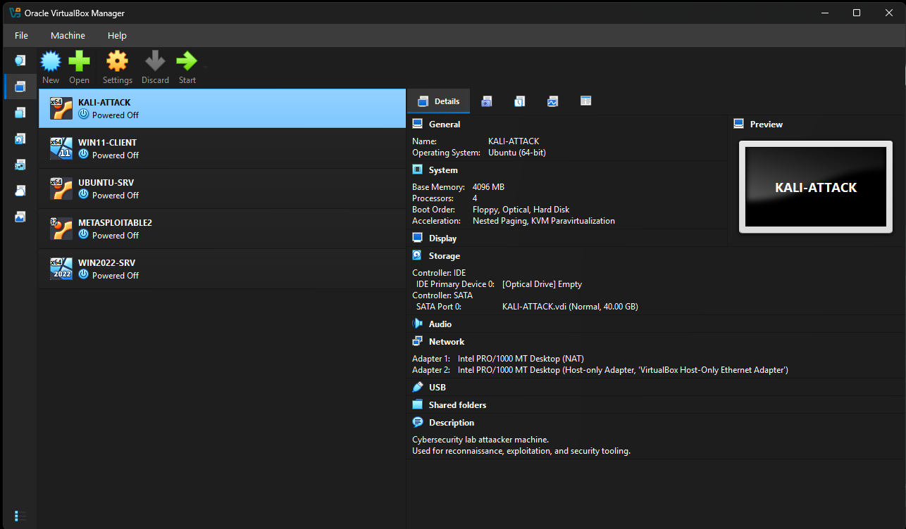
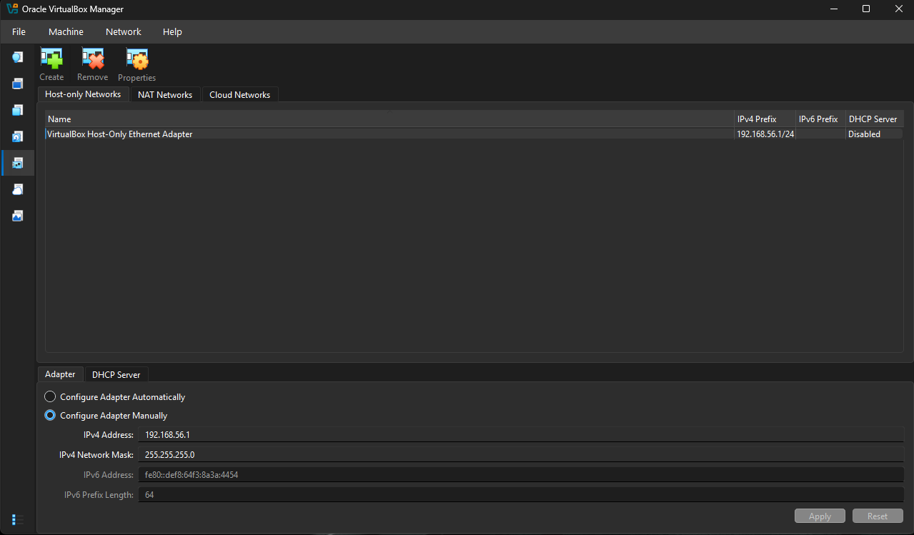
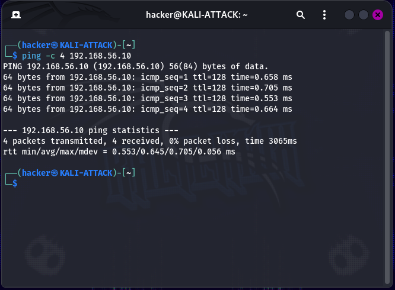
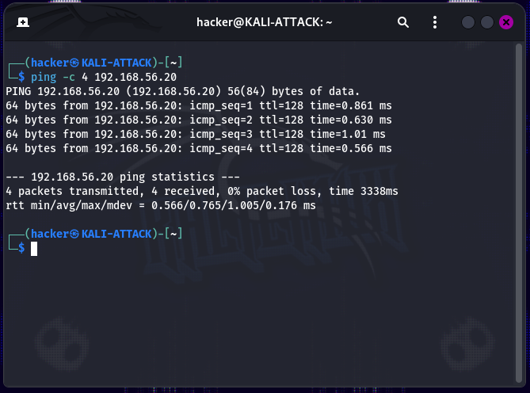

Overview
This lab established the foundation for my cybersecurity home laboratory using Oracle VirtualBox. The environment was designed to provide an isolated and reproducible platform for practicing network security, vulnerability assessment, exploitation, detection, incident response, and Active Directory security.
The lab uses multiple virtual machines representing attacker, server, workstation, and intentionally vulnerable systems. The environment is isolated from the primary network using a VirtualBox Host-Only network.
Objectives
- Build a reproducible cybersecurity testing environment.
- Configure an isolated virtual network.
- Deploy and administer multiple virtual machines.
- Establish communication between Linux and Windows systems.
- Create a foundation for future security labs.
- Document the environment and validate its operation.
Lab Environment
Host System
Windows workstation running Oracle VirtualBox with an AMD Ryzen 7 8700F processor and 32 GB of memory.
Network
Isolated VirtualBox Host-Only network using the
192.168.56.0/24 address space.
Security Workstation
Kali Linux used as the primary security testing and administration workstation.
Target Systems
Windows, Ubuntu, and Metasploitable systems used to simulate enterprise and vulnerable environments.
Virtual Machines
| System | Operating System | Purpose | IP Address |
|---|---|---|---|
| KALI-ATTACK | Kali GNU/Linux 2026.2 | Security testing workstation | 192.168.56.40 |
| WIN2022-SRV | Windows Server 2022 | Enterprise server platform | 192.168.56.10 |
| WIN11-CLIENT | Windows 11 Pro | Endpoint simulation | 192.168.56.20 |
| UBUNTU-SRV | Ubuntu Server 25.04 | Linux server environment | 192.168.56.30 |
| METASPLOITABLE2 | Ubuntu-based vulnerable system | Controlled security testing target | 192.168.56.50 |
Network Configuration
The laboratory uses two types of virtual network connectivity. Systems requiring internet access use a NAT adapter for updates and package downloads, while the Host-Only adapter provides isolated communication between laboratory systems.
NAT
Provides controlled internet connectivity for systems that require updates or package downloads.
Host-Only
Provides isolated communication between laboratory systems without exposing testing traffic to the external network.
Implementation
- Deployed five virtual machines in Oracle VirtualBox.
- Configured NAT and Host-Only adapters where required.
- Assigned static IP addresses to the laboratory systems.
-
Configured the Host-Only network using the
192.168.56.0/24subnet. - Verified network interfaces, routing, and connectivity from the Kali Linux security workstation.

VirtualBox laboratory environment

Isolated Host-Only network configuration
Validation
Connectivity was validated from Kali Linux by testing communication with each laboratory target.
| Target | Address | Result |
|---|---|---|
| Ubuntu Server | 192.168.56.30 | Successful |
| Windows Server 2022 | 192.168.56.10 | Successful |
| Windows 11 | 192.168.56.20 | Successful |
| Metasploitable2 | 192.168.56.50 | Successful |
Kali → Ubuntu Server

Kali → Windows Server 2022

Kali → Windows 11
Kali → Metasploitable2
Troubleshooting
Kali Network Interface
The Kali Host-Only interface was initially misconfigured. I used interface and routing information to identify the correct adapter and corrected the configuration.
Lesson: Verify interfaces and routing before applying network configuration changes.
Windows Adapter Status
A Windows Host-Only adapter appeared disconnected in the graphical interface even though communication was working.
Lesson: Validate actual functionality with diagnostic tools rather than relying exclusively on GUI status indicators.
Windows 11 ICMP
Windows 11 initially blocked ICMP traffic. The issue was isolated to the inbound firewall configuration, and the appropriate Windows Defender Firewall rule was enabled.
Lesson: Endpoint firewall policies can directly affect security testing and network troubleshooting.
Lessons Learned
- Virtual network configuration and adapter mapping.
- Static IP addressing and basic network validation.
- Evidence-driven troubleshooting.
- How endpoint firewalls affect network testing.
- Using VM snapshots to maintain reproducible lab states.
- Documenting technical work for future reference.
Want the Technical Details?
The GitHub repository contains the complete technical documentation for this lab, including detailed configuration steps, commands, troubleshooting notes, network architecture, screenshots, and future improvements.
View Full Technical Documentation on GitHub →Lab 02: Network Reconnaissance
Using Nmap to discover hosts, enumerate services, and establish a baseline understanding of the laboratory network.
View Lab 02 →